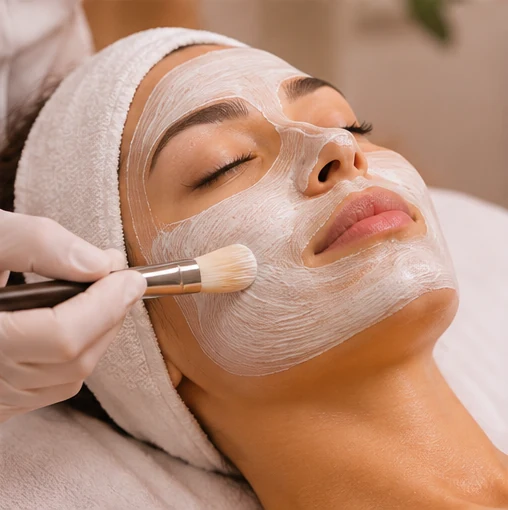

Pele acneica
Atenção especial à pele com tendência à acne, respeitando sua sensibilidade e os limites do cuidado estético.
Realce a beleza natural da sua pele com cuidados faciais personalizados, técnica de extração e atenção ao seu conforto.
Agende seu atendimento ↗★★★★★5,0 no Google · Mais de 500 avaliações
Conheça os procedimentos que são destaque na Manauara e descubra como cuidar melhor da sua pele.
Remoção de impurezas e cravos para uma pele com aparência mais limpa e renovada, respeitando suas características e sensibilidade.
Quero saber mais ↗Extração cuidadosa de cravos e milium, quando indicada, com atenção ao conforto e às características da pele.
Quero saber mais ↗Atenção especial à pele com tendência à acne, respeitando sua sensibilidade e os limites do cuidado estético.
Cuidados faciais voltados ao excesso de oleosidade, sem descuidar da hidratação.
Hidratação para favorecer a maciez e o conforto da pele.
Cuidados voltados à textura e à aparência da pele, conforme avaliação individual.
Orientações para cuidar da sua pele também em casa, com uma rotina de skincare adequada às suas necessidades.
O cuidado com a pele e a atenção em cada atendimento se refletem nas avaliações de quem já passou pela Manauara.
Ver avaliações no Google ↗
Imagem ilustrativaSou esteticista e cosmetóloga, formada pela Universidade Jorge Amado.
Meu trabalho na Manauara é voltado ao cuidado facial personalizado, com destaque para a limpeza de pele profunda e as técnicas de extração. A atenção às características de cada pele e as orientações de autocuidado fazem parte dessa proposta.
Conheça meu trabalho no InstagramCompartilhe suas principais queixas e objetivos de cuidado.
Conheça as características da sua pele e os cuidados que podem ser indicados.
Receba orientações para dar continuidade ao cuidado no dia a dia.
Entre em contato pelo WhatsApp para consultar horários, valores e disponibilidade.
A indicação depende das características da sua pele. Converse com Camila para avaliar quais cuidados fazem sentido para você.
No Edifício CEO Salvador Shopping, em Caminho das Árvores. Confirme a sala pelo WhatsApp antes da visita.
A técnica e os cuidados devem ser adaptados às características e à sensibilidade de cada pele. A avaliação individual ajuda a definir a melhor abordagem.
CEO Salvador Shopping · Av. Tancredo Neves, 2539
Caminho das Árvores · Salvador, BA
Segunda a sexta: 9h às 19h · Sábado: 9h às 15h
Agende seu atendimento pelo WhatsApp.